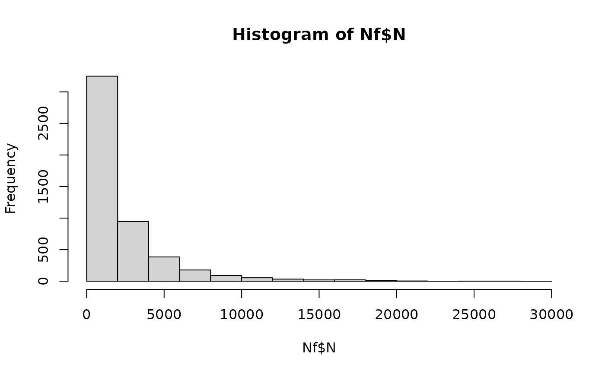

The fvPortioning() function represents the portioning of a pack of frozen vegetables into a smaller unit. It is assumed that the microbial
cells present in a contaminated pack are distributed into servings following a beta-binomial distribution, although the algorithm only retains
one portion per pack (and not all the portions that can be obtained from a pack). The dispersion factor bPort represents the extent of cell
clustering in the frozen vegetables within the package. The fact that the algorithm takes into account that a contaminated pack can produce a
non-contaminated portion, enables the estimation of the prevalence of contaminated portions. It is assumed that the dispersion parameter and
the number of portions (that can be obtained from a pack) are independent of the microbial numbers.
Usage
fvPortioning(
data = list(),
nLots = NULL,
sizeLot = NULL,
servingSize,
unitSize = NULL,
bPort
)Arguments
- data
a list of:
N(
CFU) A matrix of sizenLotslots bysizeLotunits representing the numbers of L. monocytogenes per pack before handling at home;ProbUnitPosProbability of (tested) individual lots being contaminated (vector);
PMean prevalence of contaminated lots (scalar).
- nLots
Number of lots sampled or size of the Monte Carlo simulation (scalar).
- sizeLot
Number of units or portions produced in a lot (scalar).
- servingSize
(
g) is the portion taken from a pack, which will later equals to the serving size (scalar or vector).- unitSize
(
g) is the weight of a pack of frozen vegetables (scalar).- bPort
dispersion factor of cells within the package (scalar or vector).
Value
A list of three elements:
N(
CFU) A matrix of sizenLotslots bysizeLotunits representing the numbers of L. monocytogenes in the portions of frozen vegetables.ProbUnitPosLot-specific probability of contaminated portions or servings (vector).
PMean prevalence of contaminated portions or servings (scalar).
Note
A dispersion factor \(bPort=1\) represents moderate clustering of cells Nauta (2005) in the frozen vegetables within the package.
References
Nauta MJ (2005). “Microbiological risk assessment models for partitioning and mixing during food handling.” International Journal of Food Microbiology, 100(1), 311--322. doi:10.1016/j.ijfoodmicro.2004.10.027 .
Author
Ursula Gonzales-Barron ubarron@ipb.pt and Regis Pouillot rpouillot.work@gmail.com
Examples
dat <- Lot2LotGen(
nLots = 50,
sizeLot = 100,
unitSize = 500,
betaAlpha = 0.5112,
betaBeta = 9.959,
C0MeanLog = 1.023,
C0SdLog = 0.3267,
propVarInter = 0.7
)
Nf <- fvPortioning(dat, servingSize = 150, unitSize = 500, bPort = 1)
str(Nf)
#> List of 12
#> $ Lot2LotGenParameters:List of 9
#> ..$ nLots : num 50
#> ..$ sizeLot : num 100
#> ..$ unitSize : num 500
#> ..$ betaAlpha : num 0.511
#> ..$ betaBeta : num 9.96
#> ..$ C0MeanLog : num 1.02
#> ..$ C0SdLog : num 0.327
#> ..$ propVarInter: num 0.7
#> ..$ Poisson : logi FALSE
#> $ lotMeans : num [1:50] 2.36 7.46 1.84 12.92 5.1 ...
#> $ unitsCounts : num [1:5000] 3.74 1.255 4.273 0.181 18.833 ...
#> $ N : num [1:50, 1:100] 2729 530 983 2388 5954 ...
#> $ ProbUnitPos : num [1:50] 0.03465 0.05987 0.10991 0.00192 0.07998 ...
#> $ P : num 0.0392
#> $ betaGen : num [1:50] 0.01996 0.06012 0.12523 0.00213 0.11932 ...
#> $ nLots : num 50
#> $ sizeLot : num 100
#> $ unitSize : num 500
#> $ unitsServing : num [1:5000] 12.467 4.183 14.244 0.604 62.777 ...
#> $ servingSize : num 150
#> - attr(*, "class")= chr "qraLm"
hist(Nf$N) # histogram of microbial cells in contaminated servings
